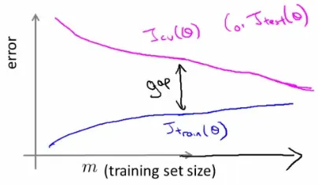
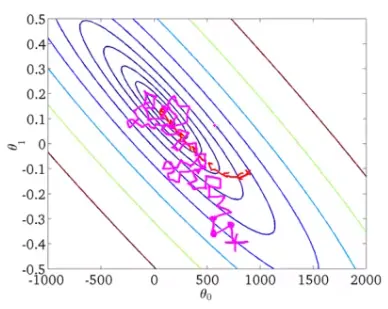
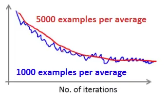
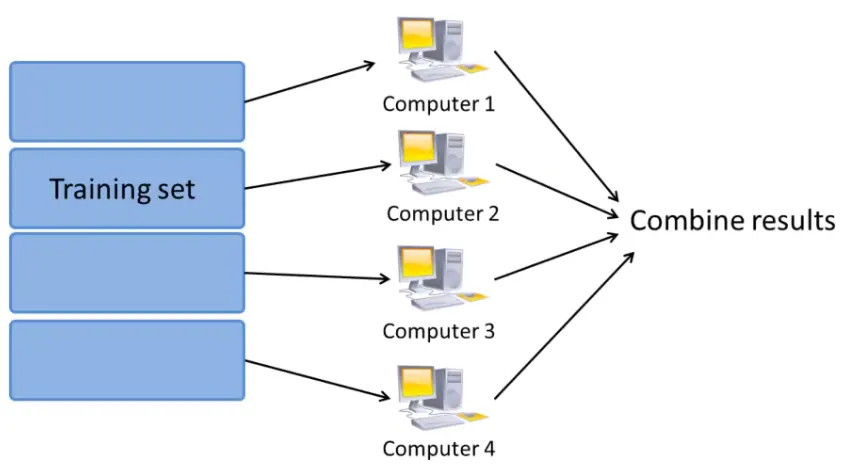

Training machine learning models on large datasets poses significant challenges due to the computational intensity involved. To effectively handle this, various techniques such as stochastic gradient descent and online learning are employed. Let's delve into these methods and understand how they facilitate large-scale learning.
To achieve high performance, one effective approach is using a low bias algorithm on a massive dataset. For example:
m = 100,000,000 examples.Logistic Regression Update Rule:
$$ \theta_j := \theta_j - \alpha \frac{1}{m} \sum_{i=1}^m(h_{\theta}(x^{(i)}) - y^{(i)}) x_j^{(i)} $$

Diagnosing Bias vs. Variance:
SGD optimizes the learning process for large datasets by updating parameters more frequently:
Batch Gradient Descent: Traditional method that sums gradient terms over all examples before updating parameters. It's inefficient for large datasets.
SGD Approach: Randomly shuffle the training examples. Update $\theta_j$ for each example:
$$ \theta_j := \theta_j - \alpha (h_{\theta}(x^{(i)}) - y^{(i)}) x_j^{(i)} $$


Imagine a cellphone-selling website scenario:
Imagine a cellphone-selling website scenario:
Here's a mock implementation of a Online Learning using Python:
Collect data on user queries and clicks on phone links. For simplicity, let's assume the data looks like this:
| User Query | Phone ID | Features (x) | Click (y) |
|---|---|---|---|
| "Android phone 1080p camera" | 1 | [0.8, 0.2, 0.9, 0.4] | 1 |
| "Android phone 1080p camera" | 2 | [0.6, 0.4, 0.8, 0.5] | 0 |
| "Cheap iPhone" | 3 | [0.3, 0.9, 0.5, 0.7] | 1 |
| ... | ... | ... | ... |
Extract feature vectors for each phone based on user queries. These features can include attributes like price, camera quality, battery life, etc.
Initialize a simple logistic regression model for CTR prediction:
from sklearn.linear_model import SGDClassifier
import numpy as np
# Initialize the model
model = SGDClassifier(loss='log', learning_rate='constant', eta0=0.01)
# Assume initial training data (for illustration purposes)
X_initial = np.array([[0.8, 0.2, 0.9, 0.4], [0.6, 0.4, 0.8, 0.5], [0.3, 0.9, 0.5, 0.7]])
y_initial = np.array([1, 0, 1])
# Initial training
model.partial_fit(X_initial, y_initial, classes=np.array([0, 1]))Update the model with new data as it arrives:
def update_model(new_data):
X_new = np.array([data['features'] for data in new_data])
y_new = np.array([data['click'] for data in new_data])
model.partial_fit(X_new, y_new)
# Example of new data arriving
new_data = [
{'features': [0.7, 0.3, 0.85, 0.45], 'click': 1},
{'features': [0.5, 0.5, 0.75, 0.55], 'click': 0},
]
# Update the model with new data
update_model(new_data)Predict the CTR for new user queries and rank the phones accordingly:
def rank_phones(user_query, phones):
# Extract features for each phone based on the user query
feature_vectors = [phone['features'] for phone in phones]
# Predict CTR for each phone
predicted_ctr = model.predict_proba(feature_vectors)[:, 1]
# Rank phones by predicted CTR
ranked_phones = sorted(zip(phones, predicted_ctr), key=lambda x: x[1], reverse=True)
return ranked_phones[:10]
# Example phones data
phones = [
{'id': 1, 'features': [0.8, 0.2, 0.9, 0.4]},
{'id': 2, 'features': [0.6, 0.4, 0.8, 0.5]},
{'id': 3, 'features': [0.3, 0.9, 0.5, 0.7]},
# More phones...
]
# Rank phones for a given user query
top_phones = rank_phones("Android phone 1080p camera", phones)
print(top_phones)Map Reduce is a programming model designed for processing large datasets across distributed clusters. It simplifies parallel computation on massive scales, making it a cornerstone for big data analytics and machine learning where traditional single-node processing falls short.

Map Reduce works by breaking down the processing into two main phases: Map phase and Reduce phase.
I. Map Phase:
II. Reduce Phase:
One popular framework for implementing Map Reduce is Apache Hadoop, which handles large scale data processing across distributed clusters.
Hadoop Ecosystem:
Process Flow:
Here's a mock implementation of a MapReduce job using Python and Hadoop Streaming:
Assume we have a text file input.txt containing the following data:
Hello world
Hello Hadoop
Hadoop is greatThis data is stored in HDFS, which will handle data distribution.
We will create two Python scripts: one for the mapper and one for the reducer. These scripts will be used in the Hadoop Streaming job submission.
mapper.py:
#!/usr/bin/env python
import sys
# Read input line by line
for line in sys.stdin:
# Remove leading and trailing whitespace
line = line.strip()
# Split the line into words
words = line.split()
# Output each word with a count of 1
for word in words:
print(f'{word}\t1')Make sure the script is executable:
chmod +x mapper.pyThe Hadoop framework handles the shuffling and sorting of data between the map and reduce phases. No additional code is needed for this step.
reducer.py:
#!/usr/bin/env python
import sys
current_word = None
current_count = 0
word = None
# Read input line by line
for line in sys.stdin:
# Remove leading and trailing whitespace
line = line.strip()
# Parse the input we got from mapper.py
word, count = line.split('\t', 1)
# Convert count (currently a string) to int
try:
count = int(count)
except ValueError:
# Count was not a number, so silently ignore/discard this line
continue
# This IF-switch only works because Hadoop sorts map output
# by key (here: word) before it is passed to the reducer
if current_word == word:
current_count += count
else:
if current_word:
# Write result to stdout
print(f'{current_word}\t{current_count}')
current_word = word
current_count = count
# Do not forget to output the last word if needed
if current_word == word:
print(f'{current_word}\t{current_count}')Make sure the script is executable:
chmod +x reducer.pySubmit the MapReduce job to the Hadoop cluster using the Hadoop Streaming utility:
hadoop jar /path/to/hadoop-streaming.jar \
-input /path/to/input/files \
-output /path/to/output/dir \
-mapper /path/to/mapper.py \
-reducer /path/to/reducer.py \
-file /path/to/mapper.py \
-file /path/to/reducer.pyAssuming the input file is stored in HDFS at /user/hadoop/input/input.txt and the output directory is /user/hadoop/output/, the job submission would look like this:
hadoop jar /usr/lib/hadoop-mapreduce/hadoop-streaming.jar \
-input /user/hadoop/input/input.txt \
-output /user/hadoop/output/ \
-mapper mapper.py \
-reducer reducer.py \
-file mapper.py \
-file reducer.pyThese notes are based on the free video lectures offered by Stanford University, led by Professor Andrew Ng. These lectures are part of the renowned Machine Learning course available on Coursera. For more information and to access the full course, visit the Coursera course page.